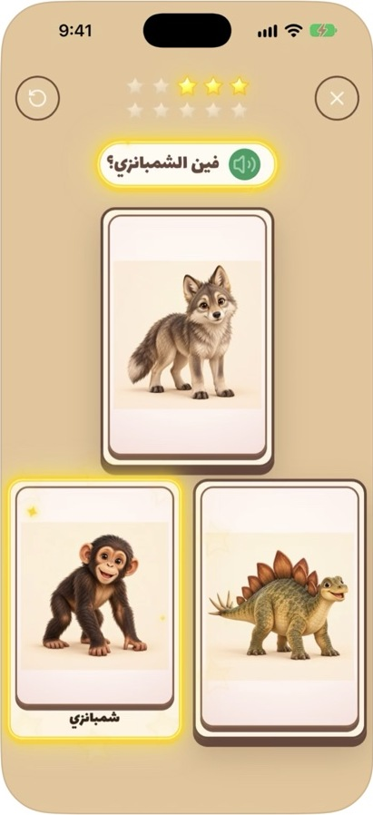

01
Tap
Every Arabic letter has an animal, from أسد (Asad, lion) to ياسمين (Yasmeen). Tap a card to hear its word.
How it works
Three gentle ways to meet everyday Egyptian Arabic words: tap them, find them, and say them.
Every Arabic letter has an animal, from أسد (Asad, lion) to ياسمين (Yasmeen). Tap a card to hear its word.
In “Find the Card”, hear “فين الجمل؟” and pick the right animal from three big cards. No reading needed.
In “Repeat after me”, hear the word, then it’s your child’s turn to say it out loud. The card turns green and every try gets a cheer.
Inside the experience
Every word is spoken by a real Egyptian voice: Ashroufi’s, or yours if you record the lines yourself. Children explore at their own pace, with stars and warm encouragement along the way.
The experience is easy to share with a parent or grandparent—listen together, point together, and practice words away from the screen.
